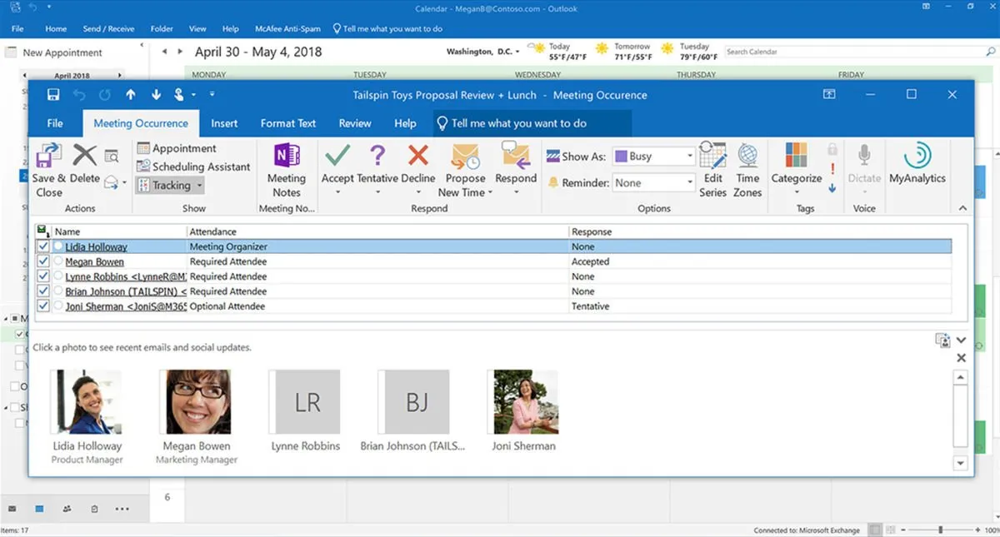
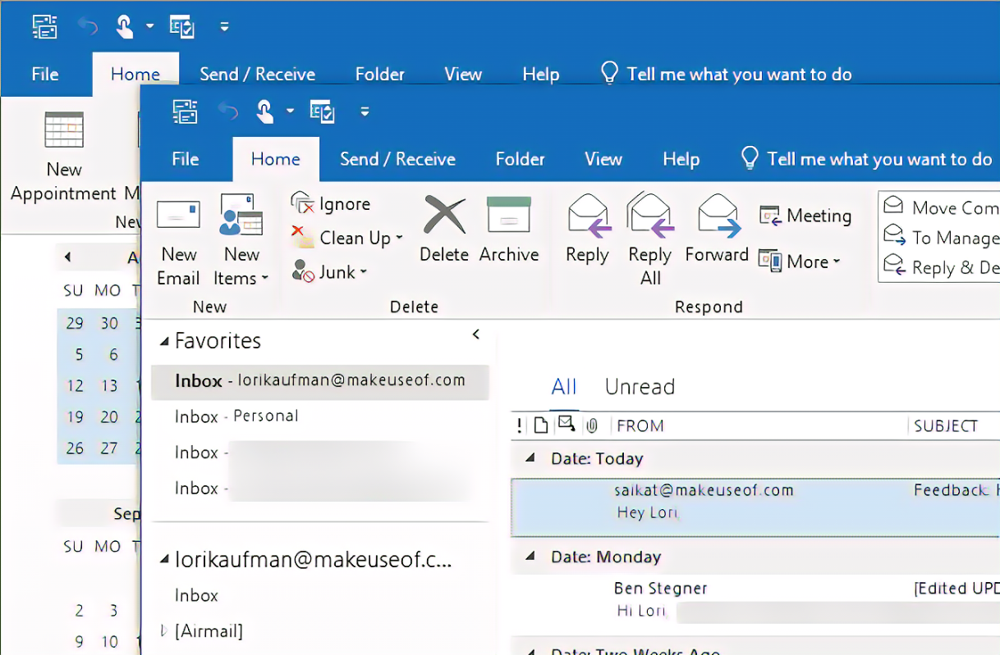
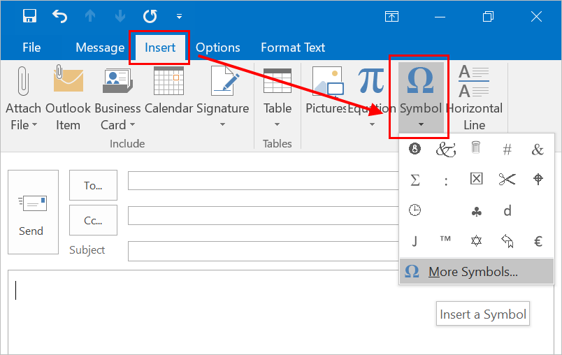

Te explicamos qué es Outlook y para qué sirve, incluyendo cuáles son sus características y funciones más importantes que han hecho de este software la herramienta perfecta para administrar el correo electrónico.
¿Qué es Microsoft Outlook y para qué sirve?
Microsoft Outlook es un software comercial que forma parte de algunas versiones de Office. Permite administrar tu correo electrónico, calendario desde tu ordenador. Es decir, enviar, recibir y programar correos de forma fácil y eficiente.
Pero no solo eso, también sirve para gestionar tu calendario, contactos, lista de tareas pendientes y compartir archivos mediante la nube (OneDrive).

Estos son algunas de las cosas que puedes hacer con Outlook:
- Programar correos electrónicos
- Crear reuniones, tareas y eventos/li>
- Compartir calendarios para mejorar el trabajo en equipo
- Gestionar y asignar tareas a miembros de tu equipo
- Gestionar y asignar tareas a miembros de tu equipo
- Administrar contactos y su información
- Escribir @menciones como si fuera una red social
Sin duda, una herramienta de productividad que te ayudará con la organización de tu correo y así puedas ser más productivo.
Funciones y características de Outlook
Vista previa de mensajes
La vista previa de mensajes de Outlook muestra, por defecto, el remitente, el asunto y una línea del cuerpo del mensaje. Pero lo que pocos saben es que puedes tener más información sin necesidad de abrir dicho mensaje.
Solo debes ir a la pestaña “Vista”, luego presionar la opción de “Vista previa del mensaje” y escoger el número de líneas que deseemos visualizar: 1, 2 o 3 líneas.
Carpetas de búsqueda
Esta opción nos permite buscar correos con ciertas características. La opción crea una carpeta virtual que contiene con las características que le indiquemos. Esta función solo nos muestra los correos en una carpeta, pero no mueve los correos a una carpeta diferente.
Puedes, por ejemplo, seleccionar los correos no leídos, según su grado de importancia, por personas, etc. Solo ingresa a la opción que dice “Carpeta”, haz clic en “Nueva carpeta de búsqueda” y seleccionar el filtro o criterio que deseas aplicar a la búsqueda.
Limpieza de carpeta
Esta función automatiza la limpieza de los mensajes redundantes de una carpeta para liberar espacio o mejorar la lectura. Nos referimos a mensajes redundantes aquellos mensajes que pertenecen a un hilo de correos y que son citados en cada respuesta.
Esta función mueve los elementos desde su carpeta hasta la carpeta de “Elementos Enviados” de forma automática. Para usarla la función, debes hacer clic derecho sobre la carpeta y seleccionar la opción “Limpiar carpeta”. Las opciones de esta función pueden configurarse en la siguiente ruta: Archivo > Opciones > Correo > Limpieza de Conversación.
Búsquedas inteligentes
Como su nombre lo indica, permite hacer búsqueda de correos y de contenido en diferentes buzones o carpetas. Es una forma de hacer búsquedas específicas utilizando algunas estipulaciones del software.
- Si ingresamos alguna palabra, el motor buscará todos aquellos correos que contengan esa palabra. Lo mismo sucede si ingresamos dos o más palabras. El motor hará la búsqueda en todos los correos que tengan alguna o todas estas palabras, sin importar su orden.
- Si queremos buscar una combinación de palabras en un orden exacto, tendremos que ingresarlo entre comillas.
- Si la búsqueda comienza con de: seguido del nombre de un contacto (de: Pedro Jiménez), se buscarán todos los correos de ese contacto en específico.
- También podemos hacer búsquedas por el asunto del correo, comenzando la búsqueda con: sobre: y luego el nombre del asunto.
- También podemos filtrar la búsqueda por archivos adjuntos, ingresando las palabras clave: tiene archivos adjuntos: si.
Programar el envío de correos
Otra funcionalidad de Outlook es que permite programar correos para que se envíen en una fecha y hora determinada.
Para usar esta opción, solo debes escribir un correo como normalmente lo haces. Luego, ingresa a la pestaña “Opciones” y a la función “Retrasar entrega”. En la opción de “No entregar antes del” escogemos la fecha y la hora exacta en que queremos que el mensaje se envíe. Una vez que hagas la modificación, haz clic en cerrar y ya habrás programado tu correo.
Partes de la Ventana de Outlook

LA PANTALLA:
al arrancar Outlook aparece una pantalla inicial puede no coincidir con la de todos los ordenadores, ya que cada usuario puede decidir quéelementos quiere que se vean en cada momento.
LA BARRA DE TITULO:
contiene el nombre del programa y el nombre de laventana actualmente activa dentro del programa. En el extremo de la derecha están los botones para minimizar, maximizar/restaurar y cerrar.
LA BARRA DE MENU:
contiene las operaciones de Outlook agrupadas en menos desplegables. Cada opcion tiene una letra subrayada, esto indica que sepuede acceder directamente a la opcion pulsando simultáneamente la tecla Alt y la letra subrayada. En Outlook la barra de menus tiene un comportamiento inteligente , que consiste, básicamente, en mostrar solo los comandos más importantes y los que el usuario va utilizando.
LA BARRA DE HERRAMIENTAs:
contienen iconos para ejecutar de forma inmediata algunas de las operaciones más habituales de la aplicacion. hay operaciones que no están disponibles en un determinado momento, se reconocen porque tienen el color atenuado
LA BARRA DE ESTADO:
se encuentra en la parte inferior de la pantalla y contiene indicaciones sobre el estado de la aplicacion, proporciona distinta informacion segun la pantalla en la que estemos en cada momento.
EL PANEL DE EXPLORACION:
esta a la izquierda de la pantalla. Este nos permite acceder a las distintas opciones de Outlook. hay dos partes bastante definidas
EL CUERPO PRINCIPAL:
es la parte donde se trabaja con los mensajes, el calendario, las notas, las tareas, etc. El cuerpo principal tendrá diferente aspecto segun en qué lugar nos encontremos, mostrando la bandeja de entrada, un calendario, la lista de contactos, etc.
LA BARRA DE TAREAS PENDIENTES:
se encuentra en la parte derecha. Aqu1 se muestra un resumen de las citas y tareas que tenemos apuntadas en Outlook, mostrando las proximas o aquellas vigentes en este momento.
